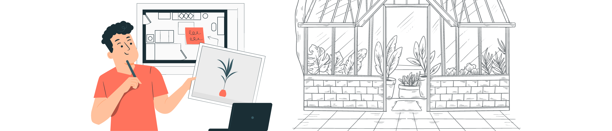
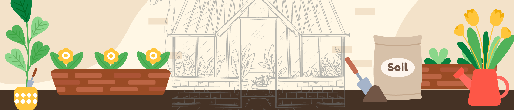
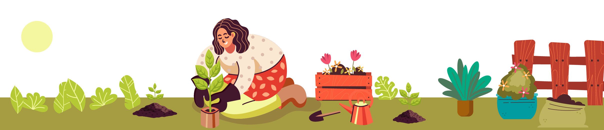
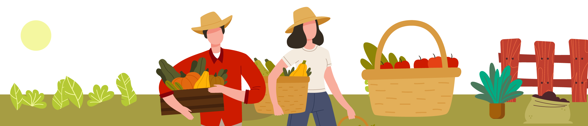

CCiclo Educativo y Grado: Ciclo
II - Grados 4° y 5°
🌱Tema Eje / Idea Central:
Diseño, planificación, construcción y análisis de una huerta escolar, usando matemáticas como eje
central, explorando ciencias y fomentando colaboración.

❓Descripción del Problema o Desafío:
¿Cómo podemos diseñar y construir una huerta escolar funcional y productiva, utilizando las matemáticas
para planificar eficientemente el espacio, calcular los recursos necesarios (tierra, semillas, agua),
hacer seguimiento al crecimiento de las plantas y analizar nuestros resultados, integrando conocimientos
de ciencias, tecnología y colaboración social?
Objetivo General: Desarrollar competencias STEAM en los estudiantes de Grados 4° y 5° a través del diseño, construcción y mantenimiento colaborativo de una huerta escolar, aplicando principios matemáticos para la planificación y análisis, comprendiendo los procesos biológicos involucrados, utilizando herramientas tecnológicas apropiadas y reflexionando sobre la importancia social y ambiental de la agricultura urbana/escolar.

Objetivos Específicos de Aprendizaje (Vinculados a EBC y Habilidades S.XXI)
MMatemáticas:
- Aplicar conceptos de medición (longitud, área, perímetro, volumen, capacidad, masa, tiempo) en situaciones prácticas relacionadas con la huerta. (EBC Mat: Pensamiento Métrico)
- Utilizar principios de geometría para diseñar la distribución espacial de la huerta y construir estructuras simples. (EBC Mat: Pensamiento Espacial)
- Recolectar, organizar, representar (tablas, gráficos de barras) e interpretar datos sobre el crecimiento de las plantas, uso de recursos y producción. (EBC Mat: Pensamiento Aleatorio)
- Resolver problemas prácticos que involucren operaciones básicas, fracciones simples y proporcionalidad en el contexto de la huerta. (EBC Mat: Pensamiento Numérico)
SCiencias Naturales:
- Identificar las necesidades básicas de las plantas (agua, luz, suelo, nutrientes) y relacionarlas con su crecimiento y desarrollo. (EBC Nat: Entorno Vivo)
- Observar y describir cambios en los seres vivos (ciclo de vida de las plantas) y en los estados de la materia (agua, suelo). (EBC Nat: Entorno Físico)
- Realizar observaciones sistemáticas y mediciones, registrando datos de forma organizada. (EBC Nat: Me aproximo al conocimiento...)
SocCiencias Sociales:
- Trabajar colaborativamente en equipo, asumiendo roles y responsabilidades compartidas. (EBC Soc: Desarrollo compromisos...)
- Reconocer la importancia de los recursos naturales (suelo, agua) y la producción de alimentos en la comunidad. (EBC Soc: Relaciones espaciales y ambientales)
- Relacionar el proyecto con costumbres y saberes locales sobre agricultura (si aplica). (EBC Soc: Relaciones con la historia y las culturas)
T/ETecnología e Ing.:
- Utilizar herramientas manuales de forma segura y apropiada para la construcción y mantenimiento de la huerta. (EBC Tec: Naturaleza y Evolución)
- Diseñar y crear representaciones gráficas (dibujos, planos sencillos, modelos) de la huerta. (EBC Tec: Solución de problemas)
- Emplear herramientas digitales básicas para buscar información, documentar el proceso (fotos, textos) y presentar resultados. (EBC Tec: Naturaleza y Evolución)
- Aplicar principios de diseño e ingeniería básica en la construcción y optimización de la huerta. (Implícito en EBC Tec: Solución de problemas)
Habilidades del Siglo XXI Desarrolladas
Este proyecto busca fomentar prioritariamente las siguientes habilidades:
🔧 Resolución de
Problemas:Enfrentar desafíos prácticos en diseño, construcción y
mantenimiento.
💭 Pensamiento
Crítico:Analizar datos de crecimiento, evaluar efectividad de acciones.
👥
Colaboración:Trabajar en equipo para lograr objetivos comunes.
🗣️
Comunicación:Registrar observaciones, presentar hallazgos, discutir ideas.
💡 Creatividad e
Innovación:Proponer soluciones originales para el diseño o problemas de la
huerta.
📊 Alfabetización de
Datos:Recolectar, interpretar y comunicar datos numéricos y gráficos.
💻 Pensamiento Computacional
(Básico):Descomponer tareas complejas, seguir secuencias de pasos.
Fases y Actividades Detalladas (Metodología ABP)
1
Fase 1: Pregunta Inicial y Planificación (Inmersión)
- Sesión de introducción: Presentación del desafío y la pregunta guía.
- Discusión grupal: Lluvia de ideas sobre huertas y la utilidad de las matemáticas.
- Investigación inicial guiada (libros, internet): Tipos de huertas, plantas comunes, necesidades básicas.
- Exploración del entorno escolar: Observar posibles ubicaciones, discutir ventajas/desventajas.
- Actividad Matemática/Diseño Inicial: Medir áreas potenciales (convencional/no convencional). Dibujar croquis.
- Formación de equipos: Asignación de roles iniciales.
2
Fase 2: Investigación Guiada y Diseño Detallado (Investigación)
- Investigación específica por equipos: Seleccionar plantas, investigar ciclos, necesidades, espacio.
- Investigación sobre el suelo: Características, mejora (compost), experimento opcional.
- Actividad Matemática/Diseño Detallado:
- Medir área precisa, calcular perímetro.
- Dibujar plano a escala (papel cuadriculado).
- Calcular área de secciones.
- Calcular volumen de tierra (si aplica).
- Estimar cantidad de semillas/plántulas.
- Listado colaborativo de materiales y herramientas.
3
Fase 3: Construcción y Siembra (Creación)
- Jornada de preparación: Limpiar terreno, preparar contenedores.
- Medición y marcado del terreno según plano (estacas, cuerdas).
- Construcción de bordes/camas elevadas (si aplica).
- Incorporación de tierra/abono.
- Actividad Matemática/Siembra: Verificar medidas, medir distancias siembra, realizar siembra/trasplante.
- Elaboración de carteles identificativos.
- Registro inicial (qué, dónde, cuándo).
- Énfasis en normas de seguridad.
4
Fase 4: Mantenimiento, Observación y Recolección de Datos (Seguimiento)
- Establecer rutinas: Calendario de riego, deshierbe, responsabilidades.
- Sesiones periódicas de observación y registro:
- Actividad Matemática/Científica: Medir altura plantas, contar hojas/flores/frutos, registrar en tabla, medir agua usada.
- Observaciones cualitativas: Color, salud, insectos.
- Registro fotográfico.
- Actividades de mantenimiento: Riego, deshierbe, vigilancia plagas (ecológica).
5
Fase 5: Análisis, Cosecha y Presentación (Evaluación y Difusión)
- Actividad Matemática/Análisis de Datos: Organizar datos, crear gráficos (barras/líneas), interpretar gráficos, calcular promedios.
- Cosecha: Recolectar productos listos.
- Actividad Matemática/Resultados: Contar/pesar cosecha, calcular totales/rendimientos simples.
- Reflexión final: Discusión grupal (éxitos, desafíos, aprendizajes).
- Decisión sobre uso de la cosecha.
- Preparación de la presentación final (carteleras, informe, digital).
- Realizar la presentación/feria de la huerta.
11. Recursos Necesarios
- Espacio Físico: Área designada en la escuela con acceso a luz solar y agua.
- Herramientas de Jardinería: Palas pequeñas, rastrillos, regaderas, guantes, cinta métrica, estacas, cuerdas.
- Materiales: Tierra abonada, compost, semillas/plántulas (ciclo corto), contenedores/materiales opcionales.
- Materiales de Papelería: Papel cuadriculado, lápices, colores, marcadores, cartulinas, cinta.
- Tecnología: Acceso a computadores/internet (opcional), cámara fotográfica, software básico (opcional).
- Humanos: Docente(s), apoyo opcional de padres/personal.
12. Evaluación del Proyecto (Formativa y Sumativa)
Evaluación Diagnóstica: Discusión inicial, preguntas conocimientos previos.
Evaluación Formativa:
- Observación directa (trabajo equipo, herramientas).
- Revisión de registros, planos, cálculos.
- Listas de cotejo (habilidades específicas).
- Preguntas guía.
- Autoevaluación y coevaluación.
Evaluación Sumativa:
- Producto Final (Huerta, registros, gráficos).
- Presentación/Exposición.
- Informe/Portafolio del Proyecto (Ver Rúbrica).
- Prueba corta o taller práctico (conceptos matemáticos aplicados).
13. Producto(s) Final(es) o Evidencias Tangibles
- La Huerta Escolar construida y en funcionamiento.
- Planos y diseños de la huerta.
- Registros de observación sistemática.
- Gráficos (barras, líneas) y análisis básico.
- Informe final o portafolio del proyecto.
- Presentación/Exposición/Feria de la Huerta.
- (Opcional) Manual básico de mantenimiento.
- (Opcional) Productos cosechados.
14. Vinculación con el Contexto y la Comunidad
- Utiliza espacio físico escolar.
- Puede involucrar familias/comunidad.
- Productos pueden compartirse.
- Presentación final a comunidad escolar.
- Investigación plantas locales/tradicionales.
- Conexión temas relevantes (alimentación, ambiente).
Rúbrica de Evaluación Grupal (Valoración del Logro del Proyecto)
| Criterio | Nivel Bajo (1 pt) | Nivel Básico (2 pts) | Nivel Alto (3 pts) | Nivel Superior (4 pts) |
|---|---|---|---|---|
| Aplicación de Conceptos Matemáticos | Muestra dificultades para aplicar conceptos matemáticos incluso con ayuda. Los registros y análisis son incompletos o erróneos. | Aplica algunos conceptos matemáticos con ayuda. Los cálculos o gráficos pueden tener errores significativos. | Aplica correctamente la mayoría de los conceptos matemáticos requeridos, con alguna inconsistencia menor. Explica sus procesos. | Aplica correcta y consistentemente conceptos matemáticos en planificación, diseño, registro y análisis. Justifica sus cálculos y representaciones. |
| Comprensión de Conceptos Científicos | No logra explicar las necesidades de las plantas ni describir su ciclo de vida a partir de la experiencia. | Identifica algunas necesidades de las plantas o etapas del ciclo, pero con explicaciones limitadas o imprecisas. | Explica las necesidades básicas de las plantas y describe el ciclo de vida con cierta precisión. | Explica claramente las necesidades de las plantas y las relaciona con las observaciones. Describe adecuadamente el ciclo de vida observado. |
| Uso de Tecnología y Herramientas | Muestra dificultades significativas en el manejo seguro o eficaz de herramientas. No utiliza tecnología de registro o diseño. | Utiliza herramientas con supervisión constante por seguridad o eficacia. El uso de tecnología de registro/diseño es básico. | Utiliza herramientas manuales de forma segura. Emplea herramientas de registro y/o digitales/diseño de manera funcional. | Utiliza herramientas manuales con seguridad y destreza. Emplea herramientas de registro y/o digitales/diseño eficazmente para el proyecto. |
| Colaboración y Trabajo en Equipo | No colabora, no cumple roles o interfiere negativamente en el trabajo del equipo. | Participa mínimamente en el grupo, requiere recordatorios para cumplir tareas. A veces dificulta la dinámica grupal. | Colabora de forma general, escucha a los demás y cumple con sus tareas asignadas. | Colabora activamente, respeta ideas ajenas, cumple roles asignados y contribuye significativamente al éxito del grupo. |
| Calidad del Producto Final y Presentación | La huerta no es funcional. No hay registros o son inutilizables. La presentación es deficiente o inexistente. | La huerta tiene problemas funcionales o de cuidado. Los registros son incompletos. La presentación es poco clara. | La huerta es funcional. Los registros están mayormente completos. La presentación comunica los aspectos principales del proyecto. | La huerta es funcional y cuidada. Los registros son completos y claros. La presentación comunica eficazmente todo el proceso y hallazgos. |
| Habilidades S.XXI | No demuestra intentos de resolver problemas, analizar información o comunicar ideas sobre el proceso. | Intenta resolver problemas, pero requiere mucha ayuda. El análisis es superficial. La comunicación es limitada. | Demuestra capacidad para resolver problemas con guía, realizar análisis básicos y comunicar ideas adecuadamente. | Demuestra consistentemente iniciativa en resolver problemas, analizar datos críticamente y comunicar ideas de forma clara y organizada. |